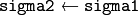

Image Filtering¶
ocl::BaseRowFilter_GPU¶
-
class
ocl::BaseRowFilter_GPU¶
Base class for linear or non-linear filters that processes rows of 2D arrays. Such filters are used for the “horizontal” filtering passes in separable filters.
class CV_EXPORTS BaseRowFilter_GPU
{
public:
BaseRowFilter_GPU(int ksize_, int anchor_, int bordertype_) : ksize(ksize_), anchor(anchor_), bordertype(bordertype_) {}
virtual ~BaseRowFilter_GPU() {}
virtual void operator()(const oclMat &src, oclMat &dst) = 0;
int ksize, anchor, bordertype;
};
Note
This class does not allocate memory for a destination image. Usually this class is used inside ocl::FilterEngine_GPU.
ocl::BaseColumnFilter_GPU¶
-
class
ocl::BaseColumnFilter_GPU¶
Base class for linear or non-linear filters that processes columns of 2D arrays. Such filters are used for the “vertical” filtering passes in separable filters.
class CV_EXPORTS BaseColumnFilter_GPU
{
public:
BaseColumnFilter_GPU(int ksize_, int anchor_, int bordertype_) : ksize(ksize_), anchor(anchor_), bordertype(bordertype_) {}
virtual ~BaseColumnFilter_GPU() {}
virtual void operator()(const oclMat &src, oclMat &dst) = 0;
int ksize, anchor, bordertype;
};
Note
This class does not allocate memory for a destination image. Usually this class is used inside ocl::FilterEngine_GPU.
ocl::BaseFilter_GPU¶
-
class
ocl::BaseFilter_GPU¶
Base class for non-separable 2D filters.
class CV_EXPORTS BaseFilter_GPU
{
public:
BaseFilter_GPU(const Size &ksize_, const Point &anchor_, const int &borderType_)
: ksize(ksize_), anchor(anchor_), borderType(borderType_) {}
virtual ~BaseFilter_GPU() {}
virtual void operator()(const oclMat &src, oclMat &dst) = 0;
Size ksize;
Point anchor;
int borderType;
};
Note
This class does not allocate memory for a destination image. Usually this class is used inside ocl::FilterEngine_GPU
ocl::FilterEngine_GPU¶
-
class
ocl::FilterEngine_GPU¶
Base class for the Filter Engine.
class CV_EXPORTS FilterEngine_GPU
{
public:
virtual ~FilterEngine_GPU() {}
virtual void apply(const oclMat &src, oclMat &dst, Rect roi = Rect(0, 0, -1, -1)) = 0;
};
The class can be used to apply an arbitrary filtering operation to an image. It contains all the necessary intermediate buffers. Pointers to the initialized FilterEngine_GPU instances are returned by various create*Filter_GPU functions (see below), and they are used inside high-level functions such as ocl::filter2D(), ocl::erode(), ocl::Sobel() , and others.
By using FilterEngine_GPU instead of functions you can avoid unnecessary memory allocation for intermediate buffers and get better performance:
while (...)
{
ocl::oclMat src = getImg();
ocl::oclMat dst;
// Allocate and release buffers at each iterations
ocl::GaussianBlur(src, dst, ksize, sigma1);
}
// Allocate buffers only once
cv::Ptr<ocl::FilterEngine_GPU> filter =
ocl::createGaussianFilter_GPU(CV_8UC4, ksize, sigma1);
while (...)
{
ocl::oclMat src = getImg();
ocl::oclMat dst;
filter->apply(src, dst, cv::Rect(0, 0, src.cols, src.rows));
}
// Release buffers only once
filter.release();
FilterEngine_GPU can process a rectangular sub-region of an image. By default, if roi == Rect(0,0,-1,-1) , FilterEngine_GPU processes the inner region of an image ( Rect(anchor.x, anchor.y, src_size.width - ksize.width, src_size.height - ksize.height) ) because some filters do not check whether indices are outside the image for better performance. See below to understand which filters support processing the whole image and which do not and identify image type limitations.
Note
The GPU filters do not support the in-place mode.
See also
ocl::BaseRowFilter_GPU, ocl::BaseColumnFilter_GPU, ocl::BaseFilter_GPU, ocl::createFilter2D_GPU(), ocl::createSeparableFilter_GPU(), ocl::createBoxFilter_GPU(), ocl::createMorphologyFilter_GPU(), ocl::createLinearFilter_GPU(), ocl::createSeparableLinearFilter_GPU(), ocl::createDerivFilter_GPU(), ocl::createGaussianFilter_GPU()
ocl::createFilter2D_GPU¶
Creates a non-separable filter engine with the specified filter.
-
C++:
ocl::createFilter2D_GPU(const Ptr<BaseFilter_GPU> filter2D)¶ Parameters: - filter2D – Non-separable 2D filter.
Usually this function is used inside such high-level functions as ocl::createLinearFilter_GPU(), ocl::createBoxFilter_GPU().
ocl::createSeparableFilter_GPU¶
Creates a separable filter engine with the specified filters.
-
C++:
ocl::createSeparableFilter_GPU(const Ptr<BaseRowFilter_GPU>& rowFilter, const Ptr<BaseColumnFilter_GPU>& columnFilter)¶ Parameters: - rowFilter – “Horizontal” 1D filter.
- columnFilter – “Vertical” 1D filter.
Usually this function is used inside such high-level functions as ocl::createSeparableLinearFilter_GPU().
ocl::createBoxFilter_GPU¶
Creates a normalized 2D box filter.
-
C++:
ocl::createBoxFilter_GPU(int srcType, int dstType, const Size& ksize, const Point& anchor=Point(-1, -1), int borderType=BORDER_DEFAULT)¶
-
C++:
ocl::getBoxFilter_GPU(int srcType, int dstType, const Size& ksize, Point anchor=Point(-1, -1), int borderType=BORDER_DEFAULT)¶ Parameters: - srcType – Input image type.
- dstType – Output image type. It supports only the same values as the source type.
- ksize – Kernel size.
- anchor – Anchor point. The default value
Point(-1, -1)means that the anchor is at the kernel center. - borderType – Border type.
See also
ocl::boxFilter¶
Smooths the image using the normalized box filter.
-
C++:
ocl::boxFilter(const oclMat& src, oclMat& dst, int ddepth, Size ksize, Point anchor=Point(-1, -1), int borderType=BORDER_DEFAULT)¶ Parameters: - src – Input image.
- dst – Output image type. The size and type is the same as
src. - ddepth – Desired depth of the destination image. If it is negative, it is the same as
src.depth(). It supports only the same depth as the source image depth. - ksize – Kernel size.
- anchor – Anchor point. The default value
Point(-1, -1)means that the anchor is at the kernel center. - borderType – Border type.
Smoothes image using box filter.
ocl::blur¶
Acts as a synonym for the normalized box filter.
-
C++:
ocl::blur(const oclMat& src, oclMat& dst, Size ksize, Point anchor=Point(-1, -1), int borderType=BORDER_CONSTANT)¶ Parameters: - src – Input image.
- dst – Output image type with the same size and type as
src. - ksize – Kernel size.
- anchor – Anchor point. The default value Point(-1, -1) means that the anchor is at the kernel center.
- borderType – Border type.
See also
ocl::createMorphologyFilter_GPU¶
Creates a 2D morphological filter.
-
C++:
ocl::createMorphologyFilter_GPU(int op, int type, const Mat& kernel, const Point& anchor=Point(-1, -1), int iterations=1)¶
-
C++:
ocl::getMorphologyFilter_GPU(int op, int type, const Mat& kernel, const Size& ksize, Point anchor=Point(-1, -1))¶ Parameters: - op – Morphology operation id. Only
MORPH_ERODEandMORPH_DILATEare supported. - type – Input/output image type. Only
CV_8UC1andCV_8UC4are supported. - kernel – 2D 8-bit structuring element for the morphological operation.
- ksize – Size of a horizontal or vertical structuring element used for separable morphological operations.
- anchor – Anchor position within the structuring element. Negative values mean that the anchor is at the center.
- op – Morphology operation id. Only
Note
This filter does not check out-of-border accesses, so only a proper sub-matrix of a bigger matrix has to be passed to it.
See also
ocl::createLinearFilter_GPU¶
Creates a non-separable linear filter.
-
C++:
ocl::createLinearFilter_GPU(int srcType, int dstType, const Mat& kernel, const Point& anchor=Point(-1, -1), int borderType=BORDER_DEFAULT)¶ Parameters: - srcType – Input image type..
- dstType – Output image type. The same type as
srcis supported. - kernel – 2D array of filter coefficients.
- anchor – Anchor point. The default value Point(-1, -1) means that the anchor is at the kernel center.
- borderType – Pixel extrapolation method. For details, see
borderInterpolate().
See also
ocl::filter2D¶
Applies the non-separable 2D linear filter to an image.
-
C++:
ocl::filter2D(const oclMat& src, oclMat& dst, int ddepth, const Mat& kernel, Point anchor=Point(-1, -1), double delta=0.0, int borderType=BORDER_DEFAULT)¶ Parameters: - src – Source image.
- dst – Destination image. The size and the number of channels is the same as
src. - ddepth – Desired depth of the destination image. If it is negative, it is the same as
src.depth(). It supports only the same depth as the source image depth. - kernel – 2D array of filter coefficients.
- anchor – Anchor of the kernel that indicates the relative position of a filtered point within the kernel. The anchor resides within the kernel. The special default value (-1,-1) means that the anchor is at the kernel center.
- delta – optional value added to the filtered pixels before storing them in
dst. Value ‘0’ is supported only. - borderType – Pixel extrapolation method. For details, see
borderInterpolate().
ocl::getLinearRowFilter_GPU¶
Creates a primitive row filter with the specified kernel.
-
C++:
ocl::getLinearRowFilter_GPU(int srcType, int bufType, const Mat& rowKernel, int anchor=-1, int bordertype=BORDER_DEFAULT)¶ Parameters: - srcType – Source array type. Only
CV_8UC1,CV_8UC4,CV_16SC1,CV_16SC2,CV_16SC3,CV_32SC1,CV_32FC1source types are supported. - bufType – Intermediate buffer type with as many channels as
srcType. - rowKernel – Filter coefficients. Support kernels with
size <= 16. - anchor – Anchor position within the kernel. Negative values mean that the anchor is positioned at the aperture center.
- borderType – Pixel extrapolation method. For details, see
borderInterpolate().
- srcType – Source array type. Only
See also
ocl::getLinearColumnFilter_GPU¶
Creates a primitive column filter with the specified kernel.
-
C++:
ocl::getLinearColumnFilter_GPU(int bufType, int dstType, const Mat& columnKernel, int anchor=-1, int bordertype=BORDER_DEFAULT, double delta=0.0)¶ Parameters: - bufType – Intermediate buffer type with as many channels as
dstType. - dstType – Destination array type.
CV_8UC1,CV_8UC4,CV_16SC1,CV_16SC2,CV_16SC3,CV_32SC1,CV_32FC1destination types are supported. - columnKernel – Filter coefficients. Support kernels with
size <= 16. - anchor – Anchor position within the kernel. Negative values mean that the anchor is positioned at the aperture center.
- bordertype – Pixel extrapolation method. For details, see
borderInterpolate(). - delta – default value is 0.0.
- bufType – Intermediate buffer type with as many channels as
ocl::createSeparableLinearFilter_GPU¶
Creates a separable linear filter engine.
-
C++:
ocl::createSeparableLinearFilter_GPU(int srcType, int dstType, const Mat& rowKernel, const Mat& columnKernel, const Point& anchor=Point(-1, -1), double delta=0.0, int bordertype=BORDER_DEFAULT, Size imgSize=Size(-1,-1) )¶ Parameters: - srcType – Source array type.
CV_8UC1,CV_8UC4,CV_16SC1,CV_16SC2,CV_16SC3,CV_32SC1,CV_32FC1source types are supported. - dstType – Destination array type.
CV_8UC1,CV_8UC4,CV_16SC1,CV_16SC2,CV_16SC3,CV_32SC1,CV_32FC1destination types are supported. - rowKernel – Horizontal filter coefficients. Support kernels with
size <= 16. - columnKernel – Vertical filter coefficients. Support kernels with
size <= 16. - anchor – Anchor position within the kernel. Negative values mean that anchor is positioned at the aperture center.
- delta – default value is 0.0.
- bordertype – Pixel extrapolation method.
- imgSize – Source image size to choose optimal method for processing.
- srcType – Source array type.
ocl::sepFilter2D¶
Applies a separable 2D linear filter to an image.
-
C++:
ocl::sepFilter2D(const oclMat& src, oclMat& dst, int ddepth, const Mat& kernelX, const Mat& kernelY, Point anchor=Point(-1, -1), double delta=0.0, int bordertype=BORDER_DEFAULT)¶ Parameters: - src – Source image.
CV_8UC1,CV_8UC4,CV_16SC1,CV_16SC2,CV_32SC1,CV_32FC1source types are supported. - dst – Destination image with the same size and number of channels as
src. - ddepth – Destination image depth.
CV_8U,CV_16S,CV_32S, andCV_32Fare supported. - kernelX – Horizontal filter coefficients.
- kernelY – Vertical filter coefficients.
- anchor – Anchor position within the kernel. The default value
(-1, 1)means that the anchor is at the kernel center. - delta – default value is 0.0.
- bordertype – Pixel extrapolation method. For details, see
borderInterpolate().
- src – Source image.
ocl::createDerivFilter_GPU¶
Creates a filter engine for the generalized Sobel operator.
-
C++:
ocl::createDerivFilter_GPU(int srcType, int dstType, int dx, int dy, int ksize, int borderType=BORDER_DEFAULT, Size imgSize=Size(-1,-1) )¶ Parameters: - srcType – Source image type.
CV_8UC1,CV_8UC4,CV_16SC1,CV_16SC2,CV_16SC3,CV_32SC1,CV_32FC1source types are supported. - dstType – Destination image type with as many channels as
srcType,CV_8U,CV_16S,CV_32S, andCV_32Fdepths are supported. - dx – Derivative order in respect of x.
- dy – Derivative order in respect of y.
- ksize – Aperture size. See
getDerivKernels()for details. - borderType – Pixel extrapolation method. For details, see
borderInterpolate(). - imgSize – Source image size to choose optimal method for processing.
- srcType – Source image type.
ocl::Sobel¶
Returns void
-
C++:
ocl::Sobel(const oclMat& src, oclMat& dst, int ddepth, int dx, int dy, int ksize=3, double scale=1, double delta=0.0, int bordertype=BORDER_DEFAULT)¶ Parameters: - src – The source image
- dst – The destination image; It will have the same size as src
- ddepth – The destination image depth
- dx – Order of the derivative x
- dy – Order of the derivative y
- ksize – Size of the extended Sobel kernel
- scale – The optional scale factor for the computed derivative values(by default, no scaling is applied)
- delta – The optional delta value, added to the results prior to storing them in dst
- bordertype – Pixel extrapolation method.
The function computes the first x- or y- spatial image derivative using Sobel operator. Surpport 8UC1 8UC4 32SC1 32SC4 32FC1 32FC4 data type.
ocl::Scharr¶
Returns void
-
C++:
ocl::Scharr(const oclMat& src, oclMat& dst, int ddepth, int dx, int dy, double scale=1, double delta=0.0, int bordertype=BORDER_DEFAULT)¶ Parameters: - src – The source image
- dst – The destination image; It will have the same size as src
- ddepth – The destination image depth
- dx – Order of the derivative x
- dy – Order of the derivative y
- scale – The optional scale factor for the computed derivative values(by default, no scaling is applied)
- delta – The optional delta value, added to the results prior to storing them in dst
- bordertype – Pixel extrapolation method.
The function computes the first x- or y- spatial image derivative using Scharr operator. Surpport 8UC1 8UC4 32SC1 32SC4 32FC1 32FC4 data type.
ocl::createGaussianFilter_GPU¶
Creates a Gaussian filter engine.
-
C++:
ocl::createGaussianFilter_GPU(int type, Size ksize, double sigma1, double sigma2=0, int bordertype=BORDER_DEFAULT, Size imgSize=Size(-1,-1) )¶ Parameters: - type – Source and destination image type.
CV_8UC1,CV_8UC4,CV_16SC1,CV_16SC2,CV_16SC3,CV_32SC1,CV_32FC1are supported. - ksize – Aperture size. See
getGaussianKernel()for details. - sigma1 – Gaussian sigma in the horizontal direction. See
getGaussianKernel()for details. - sigma2 – Gaussian sigma in the vertical direction. If 0, then  .
- bordertype – Pixel extrapolation method. For details, see
borderInterpolate(). - imgSize – Source image size to choose optimal method for processing.
- type – Source and destination image type.
ocl::GaussianBlur¶
Returns void
-
C++:
ocl::GaussianBlur(const oclMat& src, oclMat& dst, Size ksize, double sigma1, double sigma2=0, int bordertype=BORDER_DEFAULT)¶ Parameters: - src – The source image
- dst – The destination image; It will have the same size and the same type as src
- ksize – The Gaussian kernel size; ksize.width and ksize.height can differ, but they both must be positive and odd. Or, they can be zero’s, then they are computed from sigma
- sigma1sigma2 – The Gaussian kernel standard deviations in X and Y direction. If sigmaY is zero, it is set to be equal to sigmaX. If they are both zeros, they are computed from ksize.width and ksize.height. To fully control the result regardless of possible future modification of all this semantics, it is recommended to specify all of ksize, sigmaX and sigmaY
- bordertype – Pixel extrapolation method.
The function convolves the source image with the specified Gaussian kernel. In-place filtering is supported. Surpport 8UC1 8UC4 32SC1 32SC4 32FC1 32FC4 data type.
ocl::Laplacian¶
Returns void
-
C++:
ocl::Laplacian(const oclMat& src, oclMat& dst, int ddepth, int ksize=1, double scale=1, double delta=0, int borderType=BORDER_DEFAULT)¶ Parameters: - src – The source image
- dst – The destination image; It will have the same size and the same type as src
- ddepth – The desired depth of the destination image
- ksize – The aperture size used to compute the second-derivative filters. It must be positive and odd
- scale – The optional scale factor for the computed Laplacian values (by default, no scaling is applied
- delta – Optional delta value that is added to the results prior to storing them in
dst. Supported value is 0 only. - bordertype – Pixel extrapolation method.
The function calculates the Laplacian of the source image by adding up the second x and y derivatives calculated using the Sobel operator.
ocl::convolve¶
Returns void
-
C++:
ocl::convolve(const oclMat& image, const oclMat& temp1, oclMat& result)¶ Parameters: - image – The source image. Only
CV_32FC1images are supported for now. - temp1 – Convolution kernel, a single-channel floating point matrix. The size is not greater than the
imagesize. The type is the same asimage. - result – The destination image
- image – The source image. Only
Convolves an image with the kernel. Supports only CV_32FC1 data types and do not support ROI.
ocl::bilateralFilter¶
Returns void
-
C++:
ocl::bilateralFilter(const oclMat& src, oclMat& dst, int d, double sigmaColor, double sigmaSpace, int borderType=BORDER_DEFAULT)¶ Parameters: - src – The source image
- dst – The destination image; will have the same size and the same type as src
- d – The diameter of each pixel neighborhood, that is used during filtering. If it is non-positive, it’s computed from sigmaSpace
- sigmaColor – Filter sigma in the color space. Larger value of the parameter means that farther colors within the pixel neighborhood (see sigmaSpace) will be mixed together, resulting in larger areas of semi-equal color
- sigmaSpave – Filter sigma in the coordinate space. Larger value of the parameter means that farther pixels will influence each other (as long as their colors are close enough; see sigmaColor). Then d>0, it specifies the neighborhood size regardless of sigmaSpace, otherwise d is proportional to sigmaSpace.
- borderType – Pixel extrapolation method.
Applies bilateral filter to the image. Supports 8UC1 8UC4 data types.
ocl::adaptiveBilateralFilter¶
Returns void
-
C++:
ocl::adaptiveBilateralFilter(const oclMat& src, oclMat& dst, Size ksize, double sigmaSpace, double maxSigmaColor=20.0, Point anchor=Point(-1, -1), int borderType=BORDER_DEFAULT)¶ Parameters: - src – The source image
- dst – The destination image; will have the same size and the same type as src
- ksize – The kernel size. This is the neighborhood where the local variance will be calculated, and where pixels will contribute (in a weighted manner).
- sigmaSpace – Filter sigma in the coordinate space. Larger value of the parameter means that farther pixels will influence each other (as long as their colors are close enough; see sigmaColor). Then d>0, it specifies the neighborhood size regardless of sigmaSpace, otherwise d is proportional to sigmaSpace.
- maxSigmaColor – Maximum allowed sigma color (will clamp the value calculated in the ksize neighborhood. Larger value of the parameter means that more dissimilar pixels will influence each other (as long as their colors are close enough; see sigmaColor). Then d>0, it specifies the neighborhood size regardless of sigmaSpace, otherwise d is proportional to sigmaSpace.
- borderType – Pixel extrapolation method.
A main part of our strategy will be to load each raw pixel once, and reuse it to calculate all pixels in the output (filtered) image that need this pixel value. The math of the filter is that of the usual bilateral filter, except that the sigma color is calculated in the neighborhood, and clamped by the optional input value.
Local memory organization
{kind=link}
Note
We partition the image to non-overlapping blocks of size (Ux, Uy). Each such block will correspond to the pixel locations where we will calculate the filter result in one workgroup. Considering neighbourhoods of sizes (kx, ky), where kx = 2 dx + 1, and ky = 2 dy + 1 (in image ML, dx = dy = 1, and kx = ky = 3), it is clear that we need to load data of size Wx = Ux + 2 dx, Wy = Uy + 2 dy. Furthermore, if (Sx, Sy) is the top left pixel coordinates for a particular block, and (Sx + Ux - 1, Sy + Uy -1) is to botom right coordinate of the block, we need to load data starting at top left coordinate (PSx, PSy) = (Sx - dx, Sy - dy), and ending at bottom right coordinate (Sx + Ux - 1 + dx, Sy + Uy - 1 + dy). The workgroup layout is (Wx,1). However, to take advantage of the natural hardware properties (preferred wavefront sizes), we restrict Wx to be a multiple of that preferred wavefront size (for current AMD hardware this is typically 64). Each thread in the workgroup will load Wy elements (under the constraint that Wx*Wy*pixel width <= max local memory).
Applies bilateral filter to the image. Supports 8UC1 8UC3 data types.
ocl::copyMakeBorder¶
Returns void
-
C++:
ocl::copyMakeBorder(const oclMat& src, oclMat& dst, int top, int bottom, int left, int right, int boardtype, const Scalar& value=Scalar())¶ Parameters: - src – The source image
- dst – The destination image; will have the same type as src and the size size(src.cols+left+right, src.rows+top+bottom)
- topbottomleftright – Specify how much pixels in each direction from the source image rectangle one needs to extrapolate, e.g. top=1, bottom=1, left=1, right=1mean that 1 pixel-wide border needs to be built
- bordertype – Pixel extrapolation method.
- value – The border value if borderType==BORDER CONSTANT
Forms a border around the image. Supports 8UC1 8UC4 32SC1 32SC4 32FC1 32FC4 data types.
ocl::dilate¶
Returns void
-
C++:
ocl::dilate(const oclMat& src, oclMat& dst, const Mat& kernel, Point anchor=Point(-1, -1), int iterations=1, int borderType=BORDER_CONSTANT, const Scalar& borderValue=morphologyDefaultBorderValue())¶ Parameters: - src – The source image
- dst – The destination image; It will have the same size and the same type as src
- kernel – The structuring element used for dilation. If element=Mat(), a 3times 3 rectangular structuring element is used
- anchor – Position of the anchor within the element. The default value (-1, -1) means that the anchor is at the element center, only default value is supported
- iterations – The number of times dilation is applied
- bordertype – Pixel extrapolation method.
- value – The border value if borderType==BORDER CONSTANT
The function dilates the source image using the specified structuring element that determines the shape of a pixel neighborhood over which the maximum is taken. Supports 8UC1 8UC4 data types.
ocl::erode¶
Returns void
-
C++:
ocl::erode(const oclMat& src, oclMat& dst, const Mat& kernel, Point anchor=Point(-1, -1), int iterations=1, int borderType=BORDER_CONSTANT, const Scalar& borderValue=morphologyDefaultBorderValue())¶ Parameters: - src – The source image
- dst – The destination image; It will have the same size and the same type as src
- kernel – The structuring element used for dilation. If element=Mat(), a 3times 3 rectangular structuring element is used
- anchor – Position of the anchor within the element. The default value (-1, -1) means that the anchor is at the element center, only default value is supported
- iterations – The number of times dilation is applied
- bordertype – Pixel extrapolation method.
- value – The border value if borderType==BORDER CONSTANT
The function erodes the source image using the specified structuring element that determines the shape of a pixel neighborhood over which the minimum is taken. Supports 8UC1 8UC4 data types.
ocl::morphologyEx¶
Returns void
-
C++:
ocl::morphologyEx(const oclMat& src, oclMat& dst, int op, const Mat& kernel, Point anchor=Point(-1, -1), int iterations=1, int borderType=BORDER_CONSTANT, const Scalar& borderValue=morphologyDefaultBorderValue())¶ Parameters: - src – The source image
- dst – The destination image; It will have the same size and the same type as src
- op – Type of morphological operation, one of the following: ERODE DILTATE OPEN CLOSE GRADIENT TOPHAT BLACKHAT
- kernel – The structuring element used for dilation. If element=Mat(), a 3times 3 rectangular structuring element is used
- anchor – Position of the anchor within the element. The default value (-1, -1) means that the anchor is at the element center, only default value is supported
- iterations – The number of times dilation is applied
- bordertype – Pixel extrapolation method.
- value – The border value if borderType==BORDER CONSTANT
A wrapper for erode and dilate. Supports 8UC1 8UC4 data types.
ocl::pyrDown¶
Smoothes an image and downsamples it.
-
C++:
ocl::pyrDown(const oclMat& src, oclMat& dst)¶ Parameters: - src – Source image.
- dst – Destination image. Will have
Size((src.cols+1)/2, (src.rows+1)/2)size and the same type assrc.
See also
ocl::pyrUp¶
Upsamples an image and then smoothes it.
-
C++:
ocl::pyrUp(const oclMat& src, oclMat& dst)¶ Parameters: - src – Source image.
- dst – Destination image. Will have
Size(src.cols*2, src.rows*2)size and the same type assrc.
See also
ocl::columnSum¶
Computes a vertical (column) sum.
-
C++:
ocl::columnSum(const oclMat& src, oclMat& sum)¶ Parameters: - src – Source image. Only
CV_32FC1images are supported for now. - sum – Destination image of the
CV_32FC1type.
- src – Source image. Only
ocl::blendLinear¶
Performs linear blending of two images.
-
C++:
ocl::blendLinear(const oclMat& img1, const oclMat& img2, const oclMat& weights1, const oclMat& weights2, oclMat& result)¶ Parameters: - img1 – First image. Supports only
CV_8UandCV_32Fdepth. - img2 – Second image. Must have the same size and the same type as
img1. - weights1 – Weights for first image. Must have tha same size as
img1. Supports onlyCV_32Ftype. - weights2 – Weights for second image. Must have tha same size as
img2. Supports onlyCV_32Ftype. - result – Destination image.
- img1 – First image. Supports only
ocl::medianFilter¶
Blurs an image using the median filter.
-
C++:
ocl::medianFilter(const oclMat& src, oclMat& dst, int m)¶ Parameters: - src – input
`1-`or`4`-channel image; the image depth should be`CV_8U`,`CV_32F`. - dst – destination array of the same size and type as
`src`. - m – aperture linear size; it must be odd and greater than
`1`. Currently only`3`,`5`are supported.
- src – input
The function smoothes an image using the median filter with the texttt{m} times texttt{m} aperture. Each channel of a multi-channel image is processed independently. In-place operation is supported.
Help and Feedback
You did not find what you were looking for?- Ask a question on the Q&A forum.
- If you think something is missing or wrong in the documentation, please file a bug report.

Table Of Contents
- Image Filtering
- ocl::BaseRowFilter_GPU
- ocl::BaseColumnFilter_GPU
- ocl::BaseFilter_GPU
- ocl::FilterEngine_GPU
- ocl::createFilter2D_GPU
- ocl::createSeparableFilter_GPU
- ocl::createBoxFilter_GPU
- ocl::boxFilter
- ocl::blur
- ocl::createMorphologyFilter_GPU
- ocl::createLinearFilter_GPU
- ocl::filter2D
- ocl::getLinearRowFilter_GPU
- ocl::getLinearColumnFilter_GPU
- ocl::createSeparableLinearFilter_GPU
- ocl::sepFilter2D
- ocl::createDerivFilter_GPU
- ocl::Sobel
- ocl::Scharr
- ocl::createGaussianFilter_GPU
- ocl::GaussianBlur
- ocl::Laplacian
- ocl::convolve
- ocl::bilateralFilter
- ocl::adaptiveBilateralFilter
- ocl::copyMakeBorder
- ocl::dilate
- ocl::erode
- ocl::morphologyEx
- ocl::pyrDown
- ocl::pyrUp
- ocl::columnSum
- ocl::blendLinear
- ocl::medianFilter